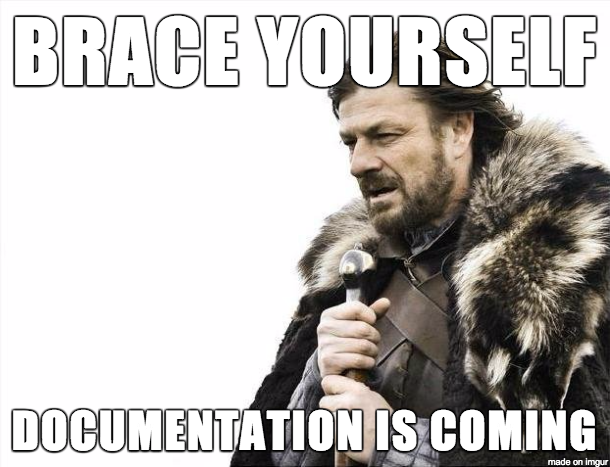

Source
People
Pipeline Description

DCLS GDIP is a pipeline developed to analyze and compare sequenced isolates involved in food-borne outbreaks.
Reports generated from DCLS GDIP will enable identification of high confidence associations between cases of illness that warranting further public health investigation.